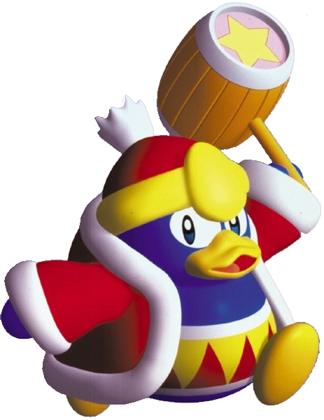
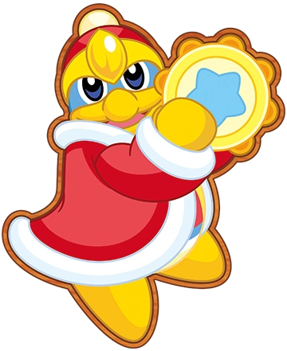

King Dedede can be unlocked as a playable character. He rides a custom Wheelie Bike.
King Dedede
The goofy king of Dream Land
King Dedede is Kirby's arch-frenemy and the self-proclaimed King of Dream Land. He is incredibly selfish, greedy, and lazy, but there are also times where he has shown he has a heart of gold.
He first appeared in Kirby's Dream Land as an antagonist, although in more recent games he has appeared as an ally (and even a playable character). King Dedede is one of the most recurring characters in the series, appearing in almost every Kirby game.
King Dedede's signature weapon is his star-studded giant hammer. After the events of Kirby's Dream Land, Dedede underwent intense training so that he could then inhale and spit out objects, just like Kirby.
Masked Dedede
Masked Dedede is King Dedede's more powerful alter ego. They look exactly the same, aside from the fact that Masked Dedede wears a metal mask that covers his entire face. Dedede's usual hammer is replaced with the “brand-new” mechanical Dedede Hammer. Masked Dedede first appeared in Kirby Super Star Ultra.
Playable Appearances
King Dedede appears as a playable character in several Kirby games. Explore some of them below!
Kirby Air Ride
Kirby 64: The Crystal Shards
He is a mandatory playable ally in some of the game's levels and is also a playable character in its sub-games.

Kirby Canvas Curse
Players can unlock the ball version of Dedede after collecting in-game medals.
Kirby's Return to Dream Land
Player 2, 3, or 4 can play as King Dedede at any time.
Kirby Triple Deluxe
He's a playable character in the Dededetour sub-game (unlocked after beating the main game). He also has his own rhythm sub-game, called Dedede's Drum Dash.

Kirby Star Allies
Players can unlock him as a Dream Friend as they progress through the game's story.